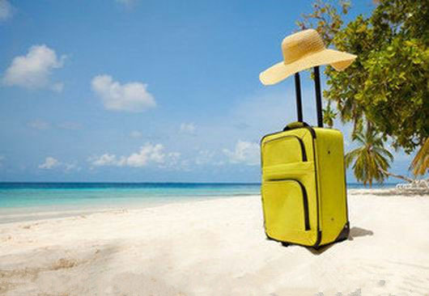
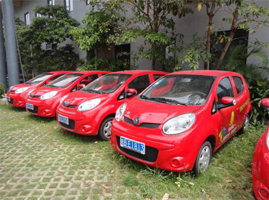
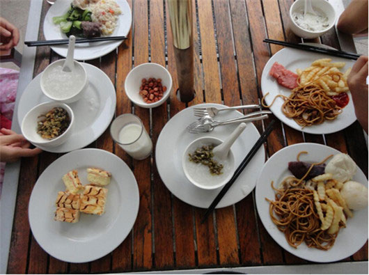
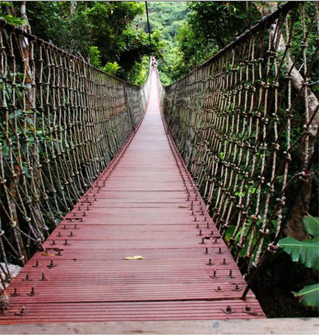
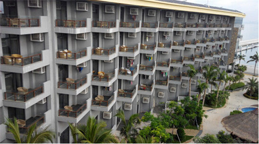

很早就听说泰国旅游性价比很高，我和老公又都钟爱海岛，今年就将目的地定在了普吉岛。拜读完攻略，对行程有了大概的规划，我们就在网上订好了8晚的酒店，并在亚航订好了往返机票。  10月20号，带着期待和小小的兴奋，我们的旅程开始了。重庆-曼谷-普吉。中午在曼谷转机时有专人举着牌子领去办落地签，办完后又领去转机处，一切都算顺利，但时间耽误得不少，匆匆吃了个BK汉堡就赶去乘飞机。到普吉后，乘mini bus去酒店，一路上山路崎岖，坐在后排晃得有点凶，又久坐食物难以消化，突然觉得胃里翻腾，心口发闷，中午吃的全都吐出来了。自己难受不说，还把车里搞得很臭。拼车的中国同胞和俄罗斯友人都很好心地给我递了湿纸巾和缓解晕车的药，还是觉得挺温暖。后来几天只要有乘车乘船的计划，我都吃个半饱就上路，不敢再吃撑了。这让我之后旅程中乘坐任何交通工具都安然无恙。晚饭前到达芭东的酒店，草草拾后就出去觅食。酒店前有很多大排档，小黑们很卖力地说着中文，我们选了一家随意点了些菜，还不错，跟后来几天的晚餐比，大排档很亲民。饭后去芭东海滩边走走，海边有点黑，但临海的店铺很敞亮。顺路问了些旅游的报价，参差不齐，决定第二天去网评较好的伟林看看。 10月21号，睡到自然醒，在酒店吃好早餐，我们就去伟林定了后面几天的游玩项目。然后又去了Let’s relax按摩店预定下午的按摩，接着去江西冷逛。这几个地方都离得很近。对于不爱逛街的老公和不嗜逛街的我来说，江西冷没给我们什么惊喜，于是什么都没买。中午去江西冷后面的班赞海鲜市场，发现生猛海鲜不便宜，于是回江西冷解决了午饭。江西冷的馆子了服务费和税，这是我们此行吃过唯一一家加费用的餐厅。下午去做按摩，Let’s relax有很多慕名而去的中国人。我们离开普吉前一天在卡塔一家普通小店做了按摩，也很不错，看来不是只有网评好的店才好。晚上去看了西蒙人妖秀，我觉得有几个人妖真的很漂亮，身材很好，但细看还是皮肤糙。他们都是假唱，估计声音没法扮成女人。但是舞蹈还跳得OK，穿那么高的高跟鞋，要跳得起舞来本来就不容易。 10月22号，向皇帝岛进发！我们报的是Banraya酒店的一日游团，上岛后在靠Racha酒店的海滩上休息，然后被带去一个浮潜点。水很清澈，鱼也非常多！午饭时间搭拖拉机到Banraya酒店就餐，并在酒店内海湾浮潜。网评说这是普吉浮潜最佳点，一点不假。水较浅，感觉离鱼很近，看得非常清楚，而且种类也很多。只是浅滩礁石太多，我想踩着它没踩着，一着急乱蹬了几脚，就不小心挂彩了。以至于第二天我都没下水。浮潜结束时在酒店草坪上发现了一只巨蜥，很悠然地漫步晒太阳！当时想我们还要住几天肯定能见着，就没拍照，谁知接下来两天阴雨不断，它就再没出现在我们视线里了。我想它还是喜欢晒太阳多一些。浮潜后一日游团走了，我们就在酒店安心住下了。  10月24号，离岛的日子。6点起床，步行5分钟到了看日出的点，只有我们两个人，四周很宁静。云层遮住了一些视线，但还是隐约看到太阳升起，把海面照成了红色。偶尔有长尾船开过，和谐地融入了这幅画。半夜的雨把椅子淋湿了，我们站着看了一阵，拍了美美的照片就回屋了。不一会又下起了雨。本来有点兴致阑珊，但因为是岛上最后一天，趁雨消停的时候，我还是跟老公再一次下水了。酒店内最后一次浮潜，仍然很棒，看到了无数鱼，包括章鱼！浮潜的时间过得非常快，结束后就快到集合去码头的时间了。我们点了两个三明治带上了拖拉机。回程我们坐在船舱内的第一排，视野很好，时不时还会有浪从窗户打进来，爽！皇帝岛归来，我们换到了卡塔海滩酒店的海景房，视野不错，但一打开窗户，就被泳池里密密麻麻的人惊到了。原本想找个中国人少洋人多的酒店会安静些，谁知洋人都喜欢泡泳池泡酒店泡海滩，反而有人满为患的感觉。尤其是离开卡塔那天，海滩边一散步，海里游的海滩上日光浴的人太多了！卡塔饮食比芭东便宜，在卡塔大排档吃的咖喱蟹是此行我最满意的菜之一。另两个菜，一是在皇帝岛Banraya酒店吃的辣味Fried fish，另一个是在奈杨海滩边小店吃的柠檬草Steamed fish。  2014年10月普吉自由行 10月25号，跟一日游的团骑大象、漂流、开ATV和丛林飞跃。地点在普吉以北的森林公园里，从卡塔开了约三小时才到。不过这一天的经历还是很值得。漂流没有想象中刺激，可能水流不够大的缘故，只有几个小陡坡有点小飞跃的感觉。不过炎热的天气里让水溅到身上还是很爽。大象很憨厚很萌，骑在它身上看它的头和耳朵感觉很像猪八戒。下坡的时候还挺陡，会有要翻下去的感觉。导象师还给我们拍了很多照，手机拍的很多不清楚，但大象扬起长鼻子笑的那张很可爱。丛林飞跃是我最喜欢的一项。想要从对面飞过来，你得先走独铁索到对岸去。走到河流上方的时候晃悠的感觉很强烈，必须要有良好的心理素质和超强的平衡能力才能顺利通关。走完独索，真正要飞跃的那一刻，反而没有多激动，被人一推，很快就过去了。回弹那几下还蛮好玩，老公把手往上一举，我也试着松了手，发现不会掉下去，也就不怕了，向岸边挥手致意。老公最喜欢的是ATV，轰轰的发动机声估计男人都比较喜欢。我不喜欢开车，ATV也不喜欢，所以就坐在他后面享受。开到中途一个小黑主动要求教我，于是我上了他的车，试着踩了几脚油门，很酷，但还是紧张，山路不宽，坡度也有点大，在小黑的指导和协助下顺利走完了全程。小黑，给你32个赞！哈哈。最后还看了小象表演，小象会呼啦圈和吹口琴、投篮和按摩。按摩时最搞笑，它喜欢按摩女人的屁股，还扯掉了小男孩的短裤！ 2014年10月普吉自由行 10月26号，最累但看到景色最美的一天。达柴岛一日游，早上6点就在酒店候车，在等候的时间里啃了面包喝了牛奶，差不多6点半车来接我们，到码头大概9点。我们定的Seastar的团，服务确实不错，码头有点心和饮料可以吃，但我们都没多吃，还要坐船呢。9点半左右上船，所有人都把鞋留在岸边，开始光脚旅行。大概一小时后，达柴岛映入眼帘。沙滩好白好美！我们去了两个浮潜点，水很清澈，鱼也很多，但是跟皇帝岛比，水太深，鱼会离得更远，看不到那么清楚。而且浪很大，水里飘着晃得厉害。导游说有Nemo出没，我们按她的指引找到了Nemo,可是跟电影里很不一样，只是小黄鱼而已。照相机拍出来完全没有存在感。不过这好像也符合电影里对它的定位，小得很不起眼。传说中的海龟没能遇到。去过皇帝岛后，觉得达柴的浮潜算一般，但是沙滩是绝好的! 午饭后我们去沙滩上拍照玩耍，下午的沙滩更宽，沙很细，光脚走着很舒服。水清得让人就想栽在水里不起来！但是真的很晒！当天回去我们俩就都黑了两圈！导游还组织了一个丛林寻鸡蟹的活动，期间看到很多藏树洞里的鸡蟹，还有树上挂着的蝙蝠。这些我兴趣并不大，只觉得树林里可以遮阳，比较舒服。4点左右我们就坐船往回走了，到酒店已经快9点，又累又饿。以后再去达柴不能再住卡塔海滩，靠南边离Seastar码头很远。住一个略近的，车程也会近一些。  10月27号上午闲逛了卡塔海滩，海滩很短，人却多得惊人！中午check out打车去了机场附近酒店。打车花了1000B，好贵，后来听撘同班飞机的老乡说淘宝订送去机场便宜很多。最后一晚的酒店比想象中好，房间都是独栋，小院儿也很有设计感，有小清新范儿。本想合影，结果午后就下雨了。还好傍晚时雨差不多停了，我们去附近的奈杨海滩走走，还看到了美丽的日落，成为意外的惊喜。更惊喜的是看完日落就近在海滩边的小店吃了顿好吃不贵的晚饭。Coconut shake超级好喝。回酒店路上，发现沙滩运动会比赛场地正在此兴建中。  2014年10月普吉自由行 2014年10月普吉自由行 10月28号，老板准时把我们送到了机场。老公说下回来的话在这酒店多住两天，比芭东和卡塔宁静得多。在曼谷机场转机，Naraya店一进去就出不来，款式花色太多，还很便宜，挑得眼花！中午吃了日本餐，就血拼免税店，给自己和小伙伴们都买好了护肤品。看看时间，该登机了，别的店都没时间逛了。不过其他大多是卖特产的。 九天时间感觉过得太快，下回再去的话一定不安排这么多行程，就找个人不多的海滩和酒店，享受普吉岛慢生活。有机会要带一起再去泰国！ 2014年10月普吉自由行